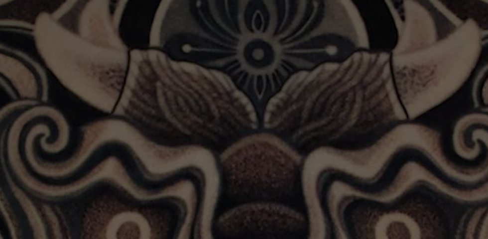

Brand Foundations & Consistency Framework
Context
Seoul Ink is a creative studio operating across Korean and international markets. At the time, the brand lacked cohesive visual and messaging standards across channels.
Approach
- Defined a clear brand voice adaptable across cultures.
- Prioritized consistency over trend-driven visuals.
- Established scalable guidelines rather than fixed executions.
- Ensured brand elements could be applied across digital and physical touchpoints.
Outcome
- Led brand communication strategy and advised on typography and direction.
- Developed a foundational brand book with consistency principles across visual and messaging systems.
- A framework built to scale across cultures and touchpoints, not a fixed set of assets.
Reconstructed case study based on original brand direction work.